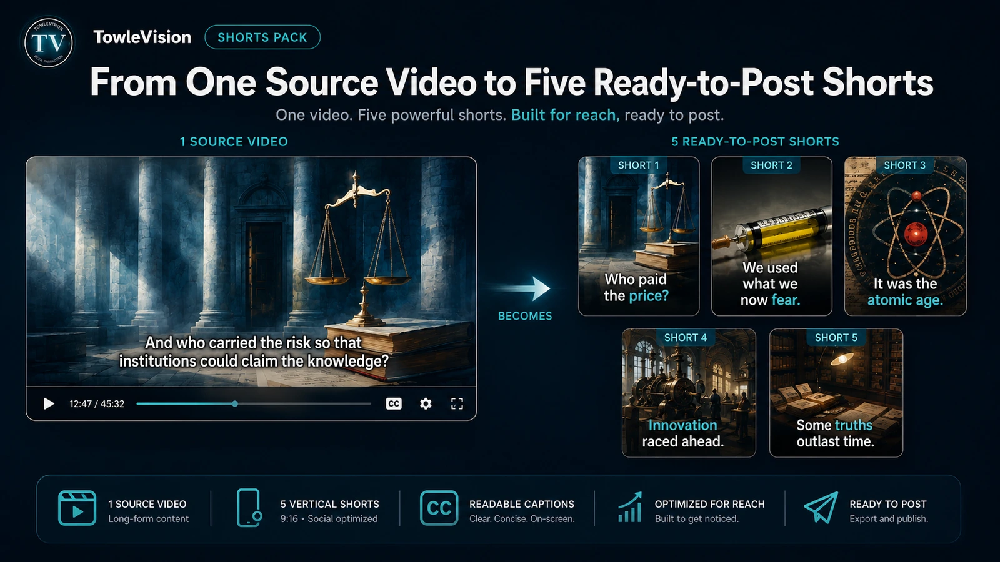

Client example - Shared with permission
Scientific Explainer for Nutraberry
A technically dense concept became a clear, professionally narrated, captioned client explainer.
View the Client Case StudyTowleVision transforms scripts, audio, existing video, music, educational material, and technical content into polished videos, narration, captions, and visual storytelling—using a human-guided, local-first production system.
Explore the TowleVision Studio workflow →Finished work shows how TowleVision handles client communication, source-media repurposing, and flexible multi-voice production.
A technically dense concept became a clear, professionally narrated, captioned client explainer.
View the Client Case Study
See one finished source production become five captioned vertical clips that each stand on their own.
View the Source-to-Shorts DemonstrationAll five TowleVision voices are available for client video and audio projects. Choose one narrator for a full production—or combine different voices chapter by chapter.
Meet the TowleVision Voice CastTowleVision is built and operated by a scientist, software developer, and media producer. Dr. Towle combines technical accuracy, human-reviewed AI workflows, careful narration, readable captions, and visual storytelling to produce clear, polished media.
Explore the Engineering PortfolioStart with the kind of work you need. Every production service remains directly reachable here, whether you are improving existing media or building something new.
Improve finished video or speech audio, add readable captions, or turn one completed production into useful short-form media.
Turn scripts, narration, interviews, music, research, or specialized source material into a structured finished production.
Scope a practical website, application, dashboard, automation, or media workflow around a real user and process.
Introductory launch price: $249. Available while the Shorts Pack service is being introduced.
Five captioned vertical clips, shaped so each one stands on its own and arrives ready for practical publishing. Built for educators, authors, podcasters, speakers, course creators, and small businesses with useful finished video.
The production work is supported by a wider practice in visual storytelling, software engineering, and human-guided media workflows.
Literary, historical, and cinematic projects show the visual judgment behind pacing, readability, narrative structure, and finished presentation.
TowleVision Studio is a local-first media production platform built around reviewable workflows, careful repair, and practical human oversight.
Custom websites, applications, dashboards, automation, and workflow tools can be scoped around a concrete user and process.
Educators, creators, early users, and technical partners can explore practical media problems through the custom-built system behind the work.
A short project description is enough to begin. If you are still comparing options, you can browse the service catalog first.
Prefer to look first? View production examples or review the Shorts Pack.